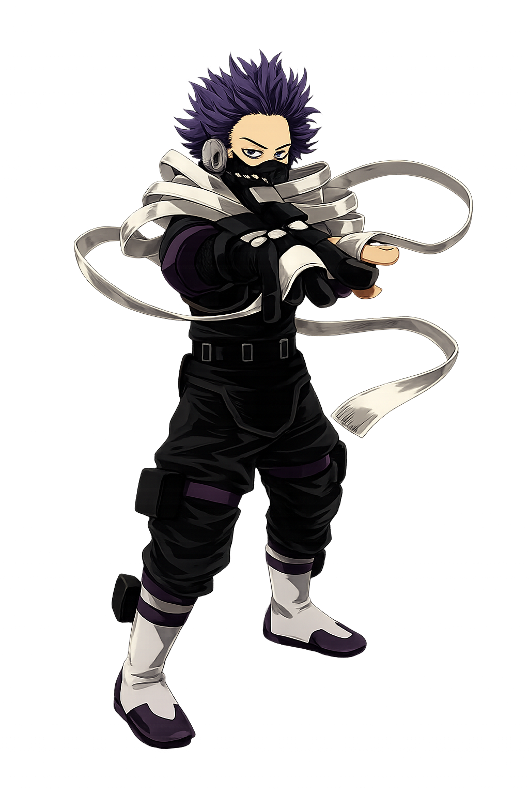
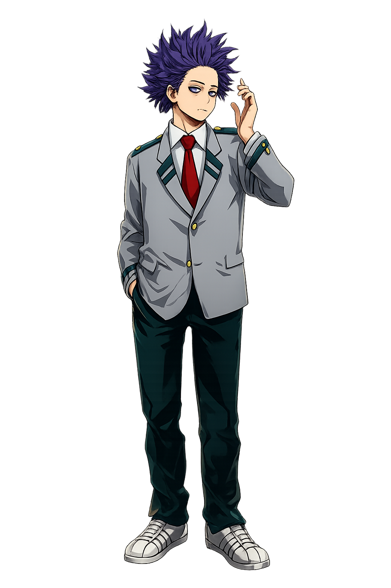
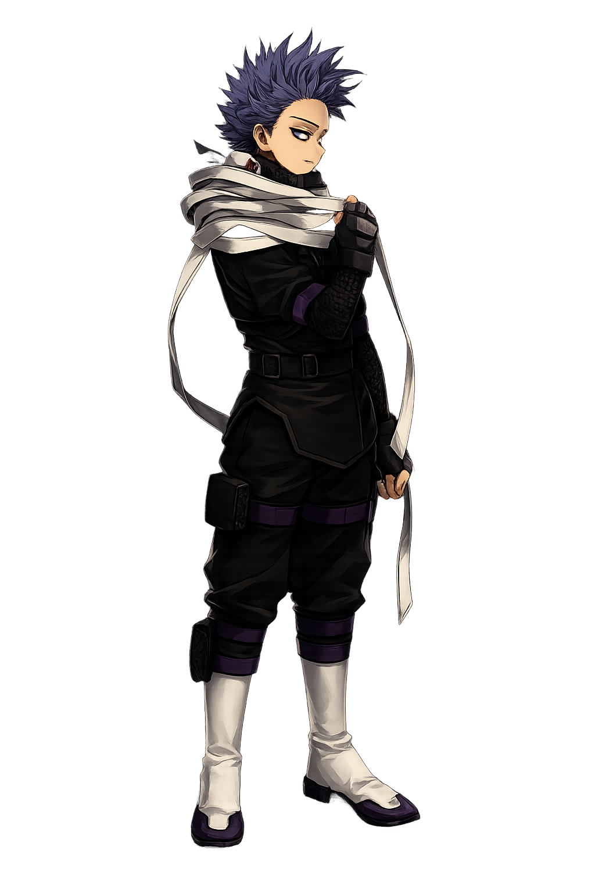
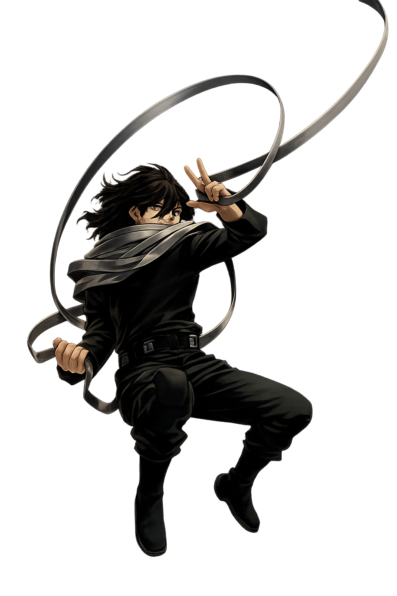

"THE MIND CONTROL HERO"
Le permite tomar el control de cualquiera que responda verbalmente a algo que él diga. Es ideal para la captura de villanos sin violencia física.

Uniforme General

Traje con Máscara
Armas de Captura

Su mentor personal. Le enseñó a usar las cintas de captura y el estilo de combate de "borrado".
Combate Físico y Sigilo